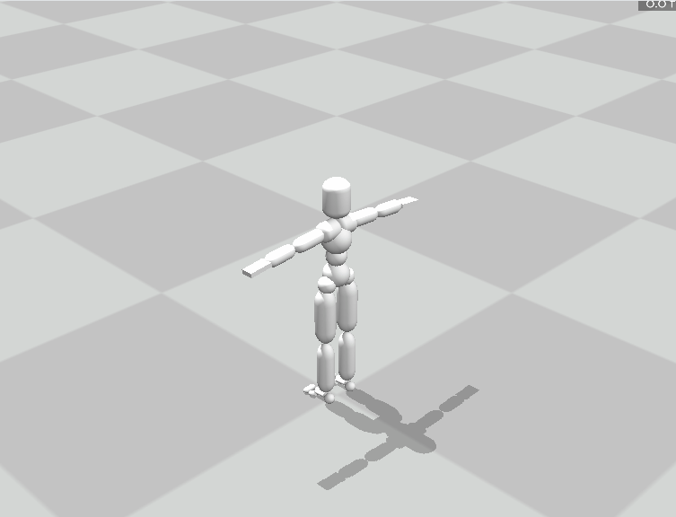
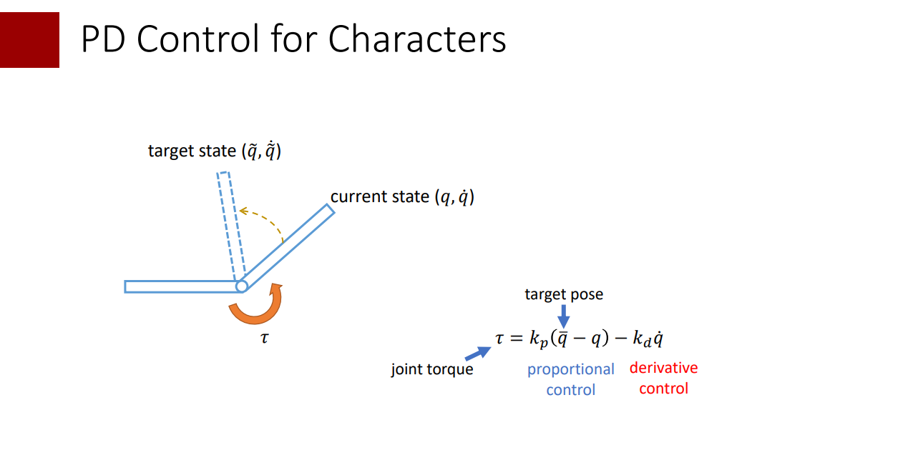
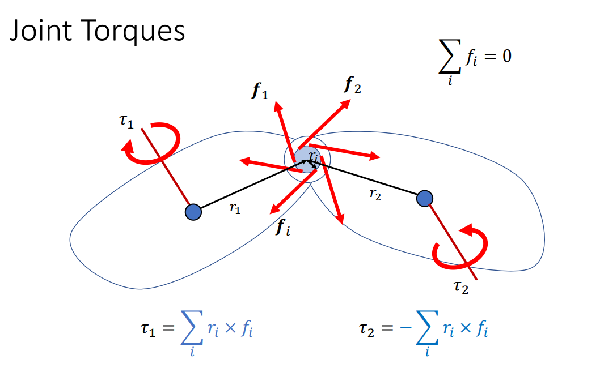
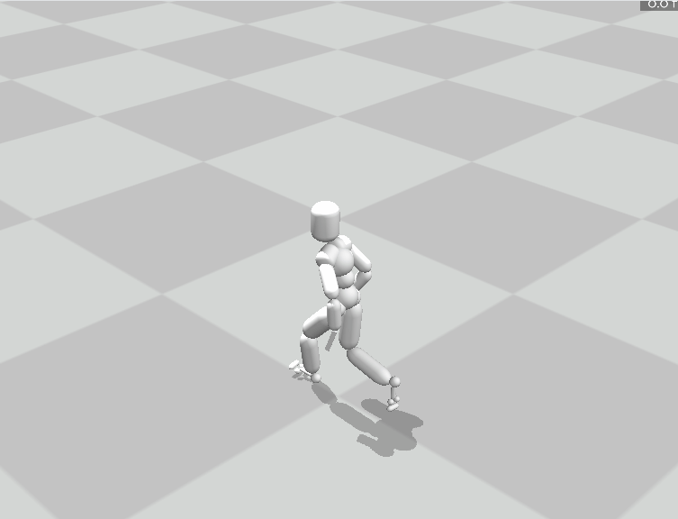
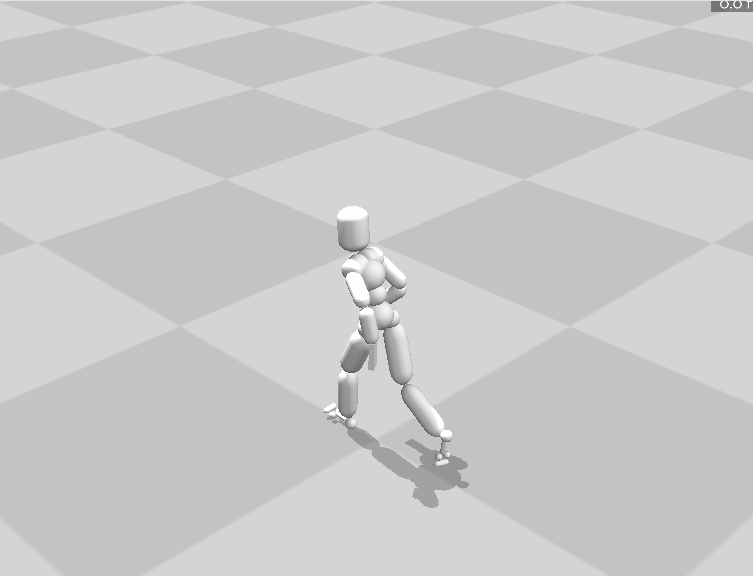
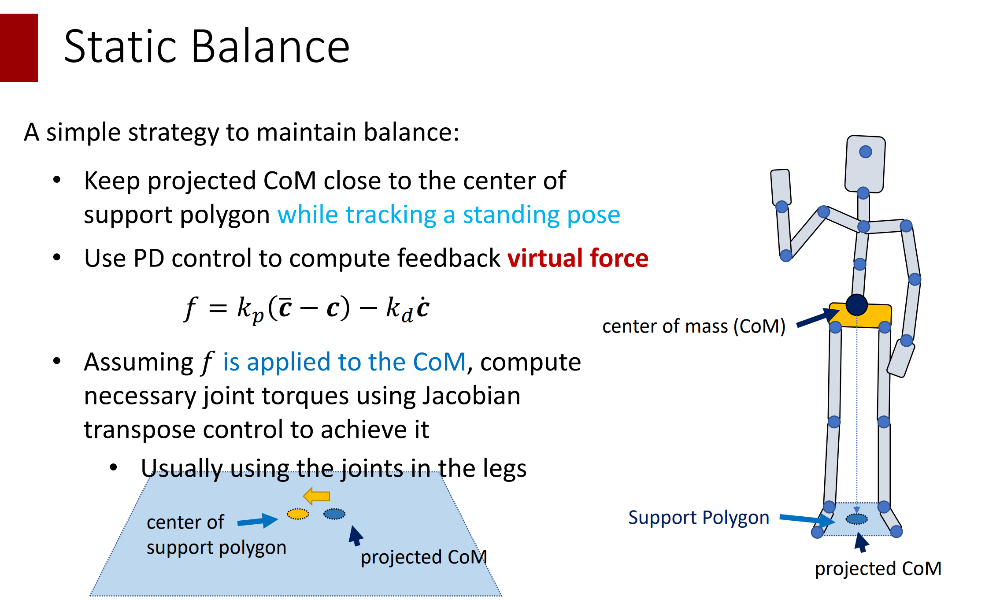
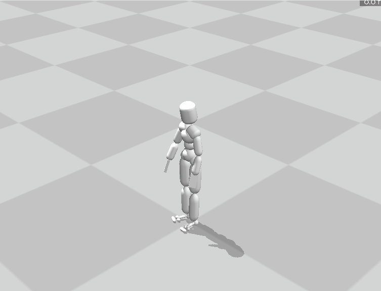

Windows建议使用conda等建立新的虚拟环境
conda create -n MoCCA python=3.10
conda activate MoCCA
pip install "numpy<2" scipy panda3d
MacOS环境建议使用virtualenv建立新的虚拟环境
python3 -m venv MoCCA
source MoCCA/bin/activate
pip install "numpy<2" scipy panda3d
如果下载过慢可使用清华镜像源安装 ( https://mirrors.tuna.tsinghua.edu.cn/help/anaconda/ )
本作业只允许使用
numpy，scipy以及其依赖的库。评测时也以此为准。作业文件中请不要import除此之外的库。
MoCCASimuBackend为本次作业的仿真后端。目前提供了Windows上编译好的动态链接库（python3.8、3.10、3.12版本），以及 MacOS上编译好的动态链接库 （python3.10、3.12版本），请选择这几个python版本使用。
如果在 import MoCCASimuBackend 时遇到 numpy 有关的报错，请更新 numpy 版本 >=1.23 且 <2。
在 MacOS 上，如果运行遇到
ModuleNotFoundError: No module named '_tkinter'或类似错误，你可能需要安装 python-tk。可以使用 homebrew 安装，命令brew install python-tk。关于如何安装 homebrew，以及如何安装对应 python 版本的 python-tk，请自行搜索解决。
目前暂不提供 linux 版本的预编译库，如需要可以自行编译安装。下载 MoCCASimuBackend-update.zip，并在解压后文件夹中使用
pip install .命令来进行安装。安装遇到问题，请自行搜索解决。
完成后可以运行task0_build_and_run.py，你将会看到一个起始T-pose的角色，由于关节没有力矩，他会逐渐跌倒在地上，睡得很安详（

为了能够在物理仿真环境中控制角色的运动，我们一般需要在角色的关节上施加力矩。一般来讲我们希望施加的力矩能够让关节呈现我们期望的角度。在本节我们实现简单的PD控制器来完成这一任务。

这里你需要完成part1_cal_torque函数。其输入包含了一个PhysicsInfo对象，通过这个对象你可以获取当前的仿真状态如位置朝向速度角速度等。
物理中的关节一般没有朝向定义，此处朝向/角速度都是用子body的朝向/角速度代替
除此之外还会输入目标的pose和一个参数列表kargs，方便后续调用时更改指定的kp, kd，具体用法可以参考python语法教程如Python 的 *args和 **kwargs。
该函数返回在每个关节施加的关节力矩。对于每个关节，子link和父link将被施加大小相等方向相反的力矩，且root关节的力矩将会被无视掉。

注意返回的关节力矩的表示是在全局坐标下。强烈建议先在每个关节的父亲坐标系下计算pd力矩再转换为全局坐标下的。并且为了避免过大的力矩，建议对其进行一定的clip。
仿真细节： 正如课上讲的，稳定的PD控制需要非常小的仿真步长。故而Viewer的更新频率依然是60FPS，但是每次更新时会进行多步仿真，通过substep指定。默认substep=32，即仿真频率是1920FPS。每个substep执行之前都会根据当前仿真状态重新计算一次pd控制力矩并施加上去。
PD控制的目标速度我们目前认为是0即可。
在实现后可以获得一个跑步的动作，由于没有控制根节点，角色会摔倒，你最终会看到角色倒在地上挣扎着做出跑步的姿态。

简单的PD控制很难让角色维持平衡。一些工作选择了在根节点上施加一个外力来辅助。这会导致一定的不物理，但是确实能够帮助保持平衡。在本节你需要计算出这个外力的方向和大小，当然，还是使用PD控制。
你需要完成part2_cal_float_base_torque，其中额外输入了目标的根节点位置，你可以从PhysicsInfo中获取根节点当前的物理信息。函数返回在根节点施加的辅助外力和力矩(世界坐标)，以及每个关节的力矩(世界坐标)，其中在根节点上施加的辅助力矩应该就是part1中被无视掉的root关节力矩。你可以调用part1的函数并通过kargs更改kp,kd。这里计算出的根节点辅助力在之后的仿真中只会保留竖直方向的力，即不让角色摔倒，是角色往前走的力仍然来自脚与地面的摩擦。
完成后你可以看到角色在竖直外力的辅助下磕磕绊绊地向前跑，效果如下：

在前两部分中，你都可以将setting设置为0来检查你的实现在角色保持站立的简单情况下是否正确，但最终的评分是在setting=1的跑步模式下进行测试。
为了让角色运动符合真正的物理规律，我们实际上不能在根节点上施加外力。回忆课上讲的Jacobian Transpose方法可以通过在脚踝等关节上施加力矩来模拟这个外力的作用。

在这一节中，角色自然站立在地面上，并且会受到环境施加的随机外力。你需要实现这样一个方法，计算出不需要辅助外力就可以保持平衡的力矩，使得角色可以一直站立。

需要提交的文件是answer_task1.py和一份你实现过程和最终实现结果的报告。最终上交时打包成zip格式，注意在你上交的每一份文件上都写好你的姓名学号。